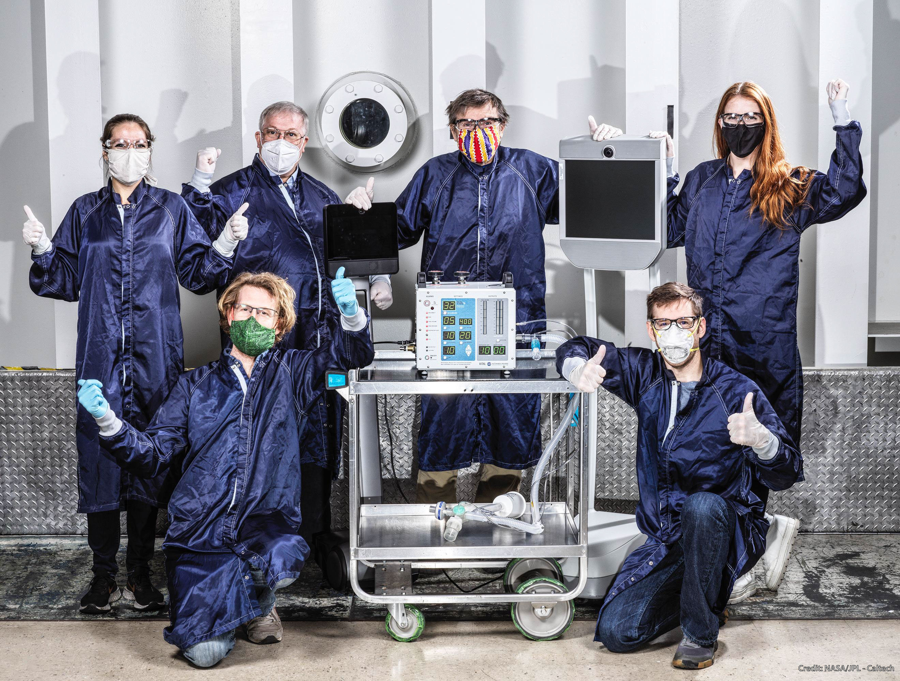

Our Origins
Stark-Airline was founded in 2020 with the vision of revolutionizing the airline industry. Our founders, a group of aviation enthusiasts and industry experts like STARK-INDUSTRIES, came together with a shared passion for travel and a commitment to excellence. From our humble beginnings, we have grown rapidly, expanding our fleet and routes to serve customers around the world. Our dedication to innovation and customer satisfaction has been the driving force behind our success, and we continue to push the boundaries of what is possible in the airline industry.
Our Mission
Our mission at Stark-Airline is to provide safe, comfortable, and innovative travel experiences to our customers. We are committed to delivering exceptional service, fostering a culture of safety, and continuously improving our operations to meet the evolving needs of our passengers. We strive to connect people and cultures, promote sustainable travel practices, and contribute positively to the communities we serve. Our mission is not just about getting you from point A to point B; it's about creating memorable journeys that inspire and enrich your life.
Our Vision
Our vision at Stark-Airline is to be the world's leading airline, recognized for our commitment to excellence, innovation, and sustainability. We envision a future where air travel is not only accessible and affordable but also environmentally responsible. We aim to set new standards in customer service, safety, and operational efficiency while fostering a culture of inclusivity and diversity. Our vision is to create a world where everyone can experience the joy of travel while minimizing our impact on the planet.

Our Values
At Stark-Airline, our values are the foundation of everything we do. We are committed to safety, ensuring that our passengers and crew are always our top priority. We value innovation, constantly seeking new ways to enhance the travel experience and improve our operations. We believe in sustainability, striving to minimize our environmental impact and promote responsible travel practices. We are dedicated to customer satisfaction, providing exceptional service and creating memorable journeys for our passengers. Finally, we value diversity and inclusivity, fostering a culture that respects and celebrates the unique backgrounds and perspectives of our employees and customers.